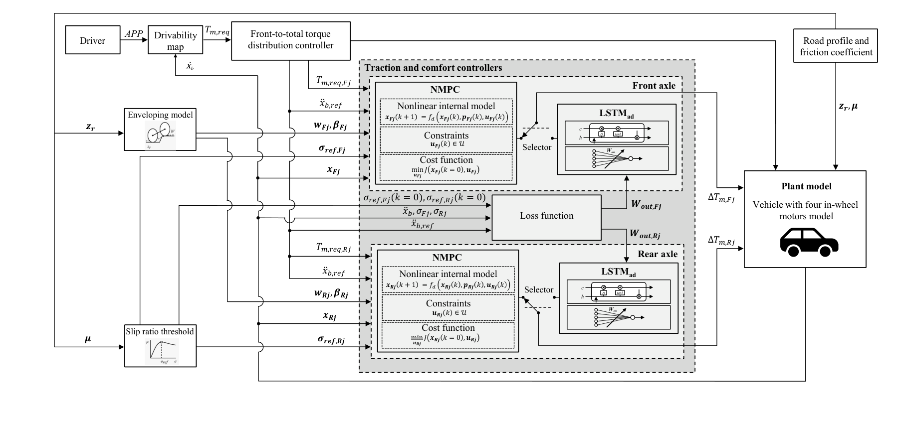
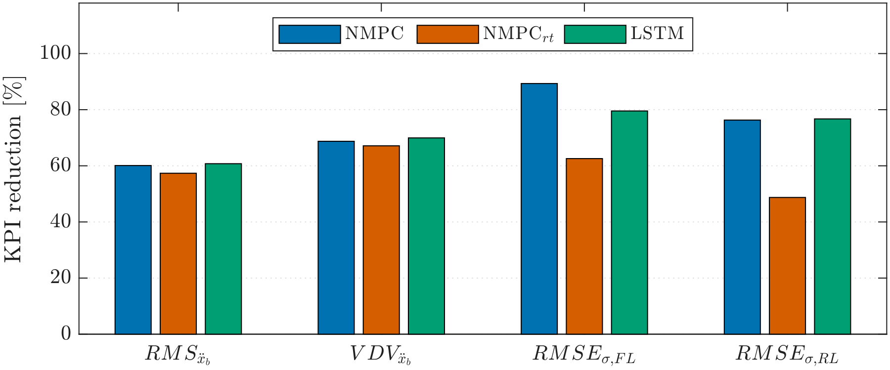

Il problema
Nei veicoli elettrici con un motore in ogni ruota la coppia si può modulare in pochi millisecondi, ruota per ruota. Questo permette di fare due cose: limitare lo slittamento delle ruote quando l'aderenza cala (controllo di trazione) e smorzare le oscillazioni di accelerazione causate da dossi e irregolarità (comfort longitudinale).
In letteratura i due obiettivi sono affrontati da controllori separati. Il controllo predittivo non lineare (NMPC), che può sfruttare la preview della strada e dell'aderenza davanti al veicolo, li gestirebbe insieme, ma risolve un problema di ottimizzazione a ogni passo ed è troppo oneroso per l'hardware automotive in tempo reale.
Architettura di controllo
Ho progettato un unico controllore per trazione e comfort, replicato sui due assi. Per ogni ruota la correzione di coppia viene calcolata dall'NMPC oppure, nella versione real-time, dalla rete neurale LSTM adattiva che lo sostituisce. Il modello del veicolo usato in simulazione è stato validato con dati sperimentali raccolti sul veicolo di prova.

L'NMPC è sviluppato con acados: il solutore viene generato in codice C e integrato in Simulink come S-function. I pesi della funzione di costo sono calibrati con un algoritmo genetico accoppiato alla simulazione.
Dall'NMPC alla rete neurale
Per portare il comportamento dell'NMPC sull'hardware reale ho usato l'imitation learning: l'NMPC fa da "esperto", genera un dataset di manovre e una rete impara a riprodurne le decisioni. Ho confrontato tre architetture: una rete feed-forward (MLP), una ricorrente (LSTM) e, per la prima volta nel controllo della dinamica del veicolo a quanto mi risulta, una rete a spazio degli stati selettivo (Mamba).
La rete scelta è una LSTM a 4 strati da 64 unità, che riproduce la correzione di coppia dell'NMPC con un coefficiente di determinazione di 0,85. Con l'analisi SHAP ho verificato quali ingressi guidano le sue decisioni nei diversi regimi di guida, per rendere il controllore interpretabile e non una "scatola nera".
Riaddestramento online
Una rete addestrata offline può trovarsi in condizioni mai viste durante il training. Per questo ho sviluppato una strategia di riaddestramento online: gli strati LSTM restano congelati e viene aggiornato solo lo strato di uscita di ogni ruota, guidato da una funzione di perdita che combina gli indicatori di prestazione (KPI) misurati in anello chiuso.
A differenza degli schemi adattivi esistenti, l'NMPC non deve girare in parallelo come riferimento: la rete si corregge basandosi direttamente sugli errori misurati sul veicolo.

Risultati in simulazione
In una manovra con dosso e calo di aderenza, NMPC e LSTM riducono i KPI di accelerazione del 60–70% e quelli di slittamento del 76–89% rispetto al veicolo senza controllo. La LSTM ottiene risultati vicini all'NMPC ideale e migliori di un NMPC semplificato per girare in real-time. In un'analisi Monte Carlo su 360 scenari con parametri variati, la rete adattiva migliora i KPI di comfort in oltre il 91% dei casi e quelli di slittamento in quasi tutti.

Prove sul veicolo
Le reti sono state implementate su una centralina dSPACE MicroAutoBox III a bordo del veicolo di prova a quattro motori in-ruota del Politecnico di Torino. Il tempo di calcolo della rete resta tra 2,99 e 3,23 ms, ampiamente dentro il passo di campionamento di 5 ms.
Nella prova più significativa il veicolo accelera su un tratto a bassa aderenza lungo 4 m, il doppio dei tratti più lunghi visti in addestramento. Senza controllo la ruota slitta vistosamente; la rete statica riduce l'errore di slip del 61%, quella adattiva dell'87%. La rete adattiva compensa anche un riferimento di slip sbagliato inviato volutamente in ingresso, perché il riaddestramento si basa sull'errore misurato.
Cosa ho imparato
Sono molto soddisfatto di questo lavoro, perché mi ha portato dalla teoria fino al veicolo reale. Ho imparato molto sull'addestramento delle reti neurali, dalla preparazione dei dati alla scelta dell'architettura, e su cosa serve per far girare in tempo reale controlli basati su modello come l'NMPC: tempi di calcolo, semplificazioni del modello e passaggio dalla simulazione all'hardware.